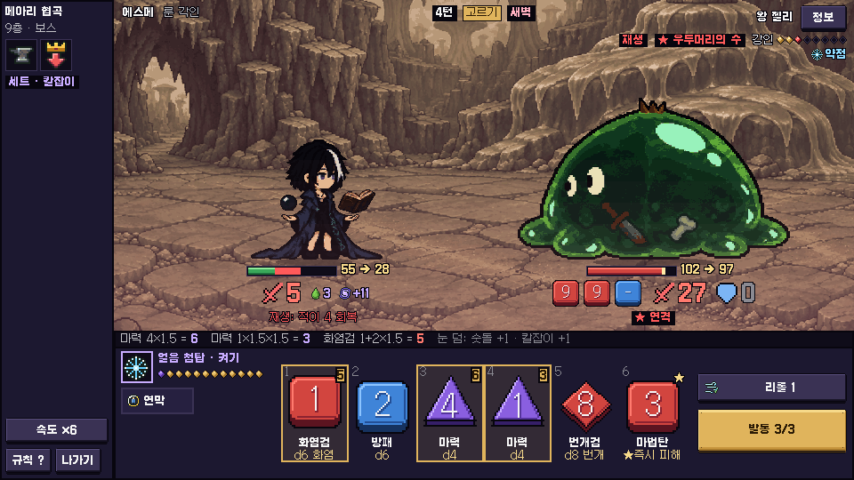

DEV NOTES
혼자, AI와 함께 도트 주사위 로그라이크를 만드는 기록

페이지를 열고 넉 달은 조용했고, 데모를 낸 다음 날부터 움직였다. 성공담은 걸러 듣고, 아직 사람이 해 본 적 없는 우리 게임이 할 일만 추렸다.
대사 음성 시연 영상이지만, 쓸모는 「소리를 어떻게 고르고, 넣고, 검사하느냐」에 있었다. 소리가 하나도 없는 우리 게임에 옮길 일곱 가지.